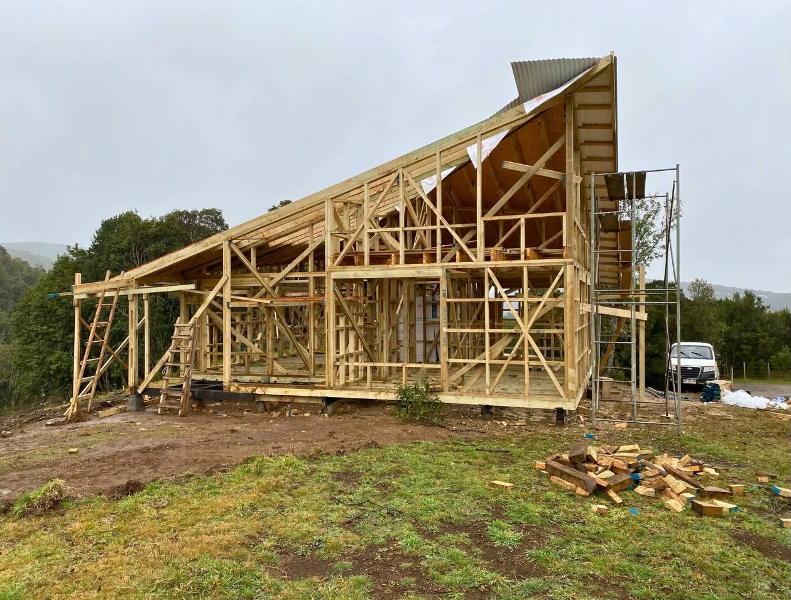

Del terreno a la estructura.
Cada etapa merece el mismo cuidado.
Desde Chonchi, para toda la isla.Viviendas a medida
TU CASA.TU LUGAR.
Construimos donde
quieres vivir.
CONOCEMOS LA ISLA.
CONSTRUIMOS CONTIGO.
Somos dos hermanos con un propósito: construir hogares para las familias de Chiloé, con un compromiso especial con nuestros vecinos de Chonchi.
Tú eliges cómo quieres vivir. Nosotros ponemos el oficio, la dedicación y un equipo que conoce esta tierra.
LA MEJOR FORMA
DE CONOCERNOS.
NUESTRAS OBRAS.
Casas con nombre propio.
Historias construidas en nuestra isla.
LO QUE NO SE VE.
LO QUE LO SOSTIENE TODO.
Construir en Chiloé exige conocer el clima,
los materiales y el valor de hacer bien cada encuentro.
MANOS QUE
SABEN HACER.
Un equipo que trabaja junto en terreno. Cortar, ajustar y montar con atención a cada pieza.
HABLEMOS DE TU IDEA ↗PRIMERO SE IMAGINA.
DESPUÉS SE HABITA.
Una misma obra en Nercón.
Dos momentos de una historia.


LA ESTRUCTURANERCÓN · CHILOÉ
Fotografías de etapas distintas, con encuadres diferentes.